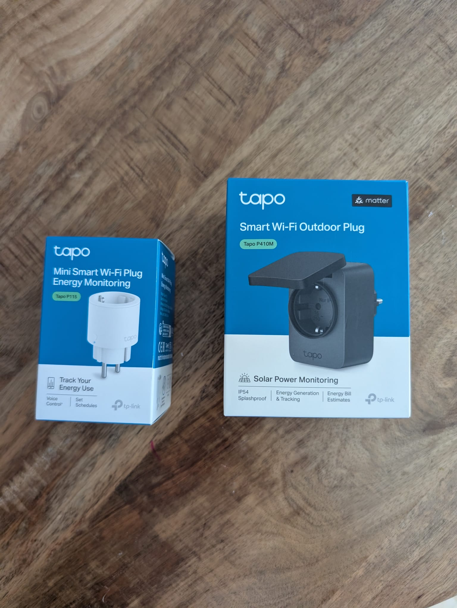
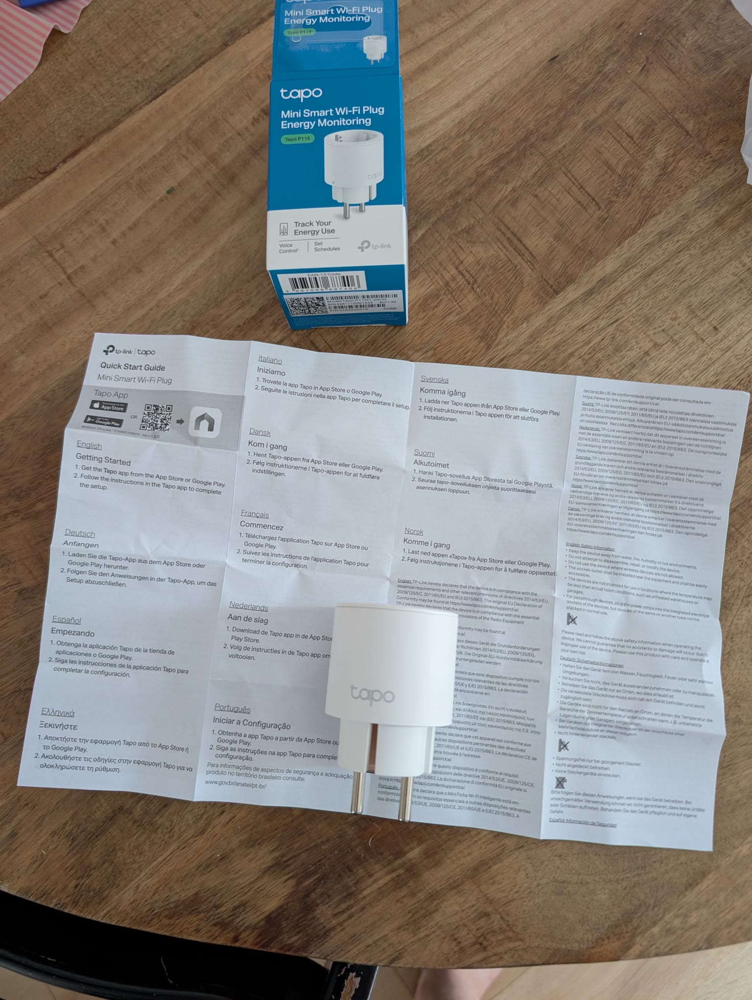
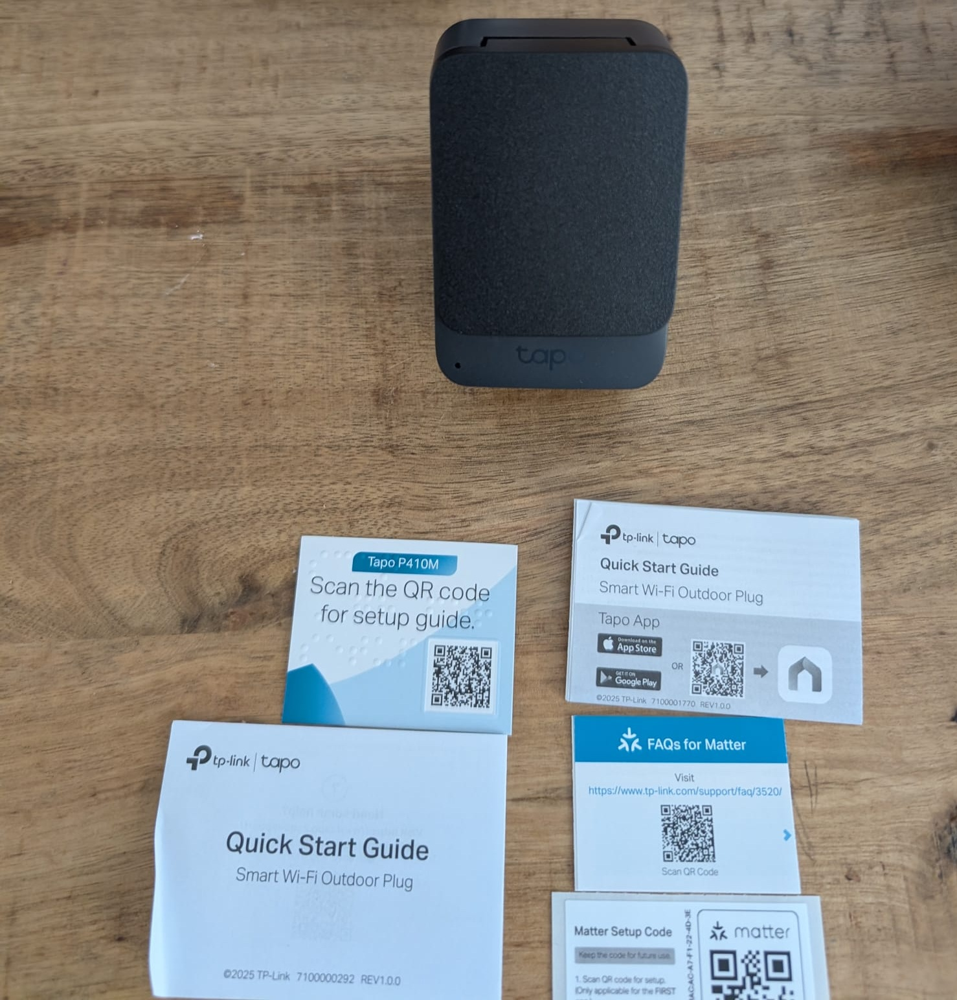
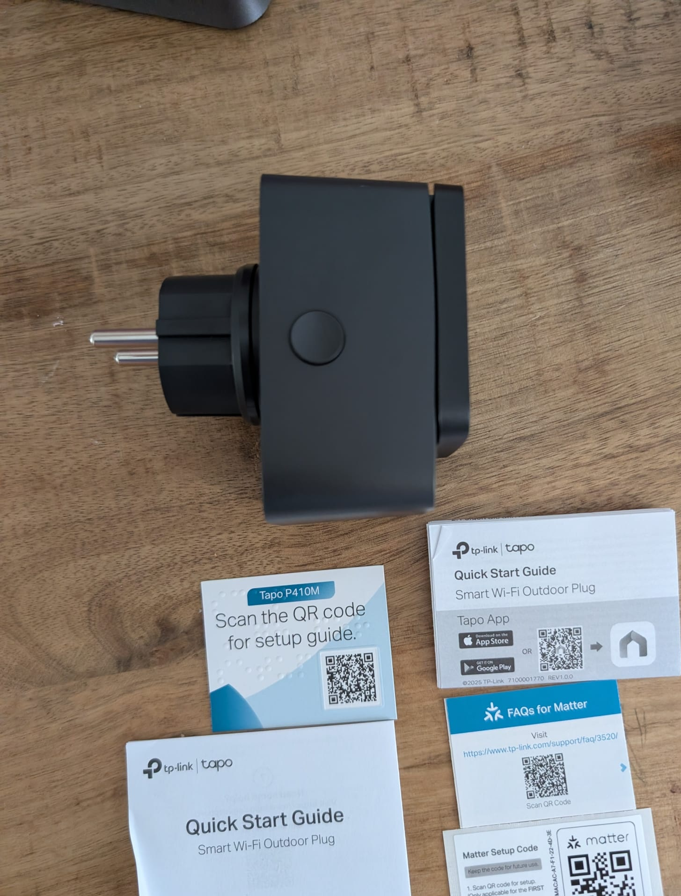
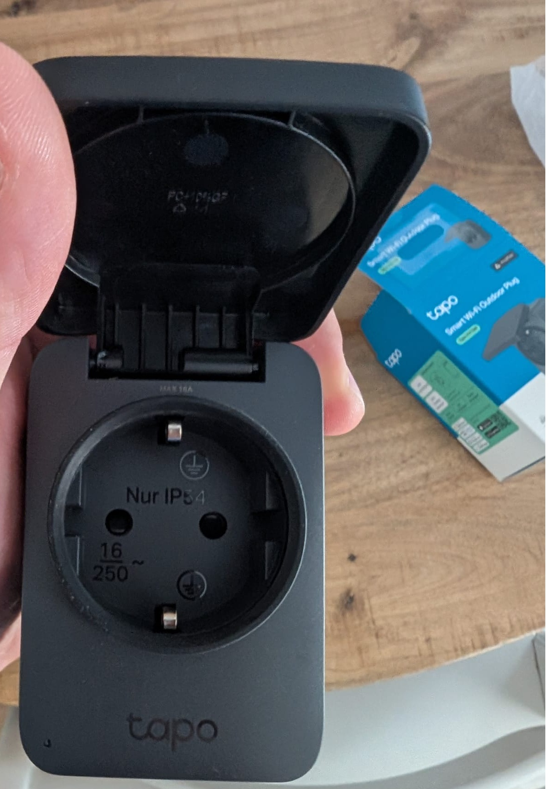

In dit artikel
Tapo stuurde me twee stekkers op: de P115 voor binnen en de P410M voor buiten. Ik ga ze de komende twee weken echt gebruiken voordat ik een eindoordeel geef. Maar een eerste blik op de verpakking en het product zelf zegt al best wat. Dit is wat ik zie als de dozen opengaan.
Wat zit er in de doos?

Direct al een duidelijk verschil in formaat. De P115-doos is compact, de P410M-doos is bijna twee keer zo groot. De P410M heeft ook een beschermklep over het stopcontact — dat zie je al op de verpakking. Tapo vermeldt op de doos: IP54, solar power monitoring, Matter en energy bill estimates. Dat zijn vier redenen om er serieus naar te kijken.
Tapo P115: eerste indruk

De P115 is door de Consumentenbond uitgeroepen tot beste koop én beste getest — dat is niet voor niks. De P115 is puur wit en klein. Echt mini — hij steekt nauwelijks uit als hij ingeplugd zit. De Quick Start Guide is een uitvouwblad in een stuk of tien talen. Twee stappen: app downloaden, instructies volgen. Meer staat er niet op. Dat is precies hoe het hoort.
In de hand: licht, glad plastic, voelt solide maar niet premium. Dat is geen kritiek — voor €17 wil je ook geen metalen behuizing. Je wil dat hij werkt, niet opvalt. En dat klopt met hoe hij eruitziet: onzichtbaar in een stopcontact.
Doet wat het moet doen, zonder fratsen
Compact, wit, onopvallend. De verpakking is helder. Geen overbodige accessoires. Als je dit in een stopcontact wil stoppen en vergeten dat hij er zit: dit is hem.
Tapo P410M: eerste indruk



De M in P410M staat voor Matter — meteen de belangrijkste reden waarom dit model duurder is dan de standaard P115. Maar er is meer. Dit is een ander verhaal dan de P115. De P410M oogt en voelt meteen een stuk steviger. De behuizing heeft een rubberen, matte coating die degelijk aanvoelt — geen goedkoop plastic. Het gewicht zit goed. Dit is een ding dat je buiten hangt en niet meer aan denkt.
De beschermklep over het stopcontact klikt soepel open en dicht. Binnenin staat "Nur IP54" gedrukt op de contactdoos zelf — een eerlijke waarschuwing van Tapo dat dit geen volledig waterdichte plug is. Gebruik hem dus niet op een plek waar water rechtstreeks op het stopcontact kan blijven staan.
Wat zit er allemaal bij?
De P410M komt compleet uit de doos: Quick Start Guide, een apart kaartje voor de Matter-setupcode (bewaar die, je hebt hem nodig als je wil koppelen via Apple Home of Google Home zonder de Tapo-app), en een FAQ-kaartje specifiek voor Matter. Dat Tapo hier apart aandacht aan besteedt is slim — Matter-koppeling gaat anders dan een gewone WiFi-setup en de meeste mensen struikelen daar over.
Zero-crossing: waarom dat slim is
Wisselstroom wisselt 50 keer per seconde van plus naar min — een golf van 50Hz. Als een relais precies op een piek schakelt, zit er veel spanning op het contact. Je kent dat geknetter als je een stekker uittrekt terwijl een apparaat volop draait? Dat is een vonk op zo'n piek. Doe je dat duizenden keren met een slimme stekker, dan kan het contact uiteindelijk vastlassen en schakelt hij gewoon niet meer.
De P410M schakelt altijd op het exacte nulpunt van de golf, waar de spanning nul is. Geen vonk, geen slijtage. Voor een vijverpomp of terrasverwarming die meerdere keren per dag schakelt: dat scheelt jaren aan levensduur.
Onwijs goed gebouwd, completer dan verwacht
De bouw verrast positief. Stevig, luxe afwerking, rubberen coating die niet goedkoop aanvoelt. De doos is compleet: Matter-kaartje erbij, aparte FAQ voor Matter, alles goed uitgelegd. Dit is geen budgetproduct dat zich voordoet als premium — het voelt gewoon goed.
Welke moet je kopen?
Koop de P115 als je…
- Binnen sluipverbruik wil meten
- Apparaten wil automatiseren via schema
- Goedkoop wil beginnen (€17)
- Home Assistant gebruikt
- Apple Home niet nodig hebt
Koop de P410M als je…
- Buiten iets wil schakelen (tuin, terras)
- Matter + Apple Home wil gebruiken
- Een robuustere behuizing wil
- Zonnepanelen-teruglevering wil meten
- Langdurig buiten wil laten hangen
Snel overzicht: P115 vs P410M
| Kenmerk | P115 (binnen) | P410M (buiten) |
|---|---|---|
| Prijs | ~€17 | ~€28 |
| Locatie | Alleen binnen | Binnen + buiten |
| Waterdichtheid | Geen | IP54 |
| Matter | Nee | Ja |
| Apple Home | Nee (geen Matter) | Ja (via Matter) |
| Energiemeting | Ja | Ja |
| Nuldoorgang | Nee | Ja |
| Bouwkwaliteit | Functioneel | Premium |
| Meegeleverd | Quick Start Guide | Incl. Matter-kaartje + FAQ |
Wil je ondertussen weten hoe de Tapo P115 zich verhoudt tot andere slimme stekkers? Bekijk het volledige overzicht van de beste slimme stekkers van 2026.